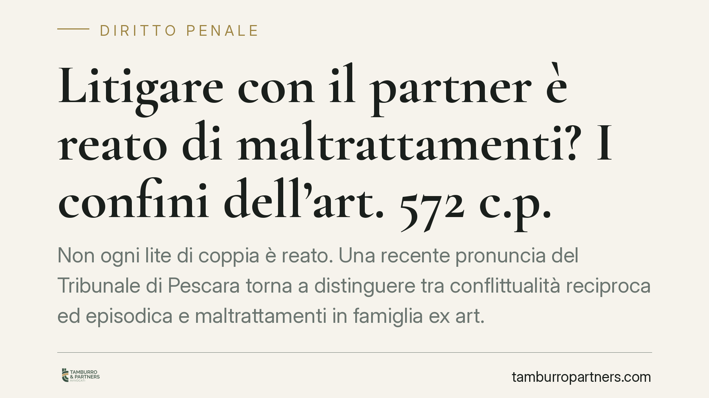

Litigare con il partner è reato di maltrattamenti? I confini dell'art. 572 c.p.
Non ogni lite di coppia è reato. Una recente pronuncia del Tribunale di Pescara torna a distinguere tra conflittualità reciproca ed episodica e maltrattamenti in famiglia ex art. 572 c.p., reato che richiede una condotta abituale di sistematica sopraffazione. La differenza non è formale: incide sull'esito penale, sulle riqualificazioni possibili e sui riflessi in sede di separazione e affido.

Il caso
Il Tribunale di Pescara ha assolto un imputato dall'accusa di maltrattamenti contro familiari o conviventi, previsto dall'art. 572 del codice penale. Secondo il giudice, gli episodi contestati avevano natura isolata e contingente: espressione di una conflittualità di coppia, non di quella condotta abituale e vessatoria che la norma richiede.
Una precisazione sulla fonte: il numero e l'anno esatti della sentenza richiamata dalla stampa specializzata non risultano al momento verificabili con certezza. Richiamiamo pertanto la pronuncia come "sentenza del Tribunale di Pescara", invitando a verificarne gli estremi presso la cancelleria prima di ogni utilizzo processuale.
Inquadramento normativo
L'art. 572 c.p. punisce chi maltratta una persona della famiglia o comunque convivente. La giurisprudenza di legittimità è costante nel qualificarlo come reato abituale: non si consuma con un singolo atto, ma richiede una pluralità di condotte che, nel loro insieme, configurano un regime di vita fatto di sopraffazioni, umiliazioni e sofferenze fisiche o morali.
La Corte di Cassazione ha chiarito che il discrimine tra maltrattamenti e semplice conflittualità coniugale sta proprio nell'abitualità e nell'asimmetria della relazione. La litigiosità reciproca — in cui entrambi i partner si pongono su un piano di sostanziale parità, alternandosi nei ruoli — esula dalla fattispecie, che presuppone invece una vittima stabilmente soggetta alla volontà prevaricatrice dell'altro (in tal senso, tra le altre, Cass. pen., Sez. VI, sulla distinzione tra maltrattamenti e liti scaturite da contrasti reciproci).
Rileva anche l'elemento soggettivo: non il dolo del singolo episodio, ma un dolo unitario e programmatico, consapevole dell'effetto complessivo di prevaricazione. Chi reagisce d'impulso a una lite non ha, di regola, la rappresentazione di un progetto vessatorio protratto nel tempo.
Assoluzione da 572 c.p. non significa impunità
Un punto spesso trascurato: l'assoluzione dai maltrattamenti non esclude di per sé ogni responsabilità penale. I singoli fatti possono essere riqualificati in reati autonomi e meno gravi.
Un pugno isolato può integrare percosse (art. 581 c.p.) o lesioni personali (art. 582 c.p.); una frase intimidatoria può configurare minaccia (art. 612 c.p.); espressioni offensive proferite in presenza di terzi possono rilevare come diffamazione o ingiuria nelle sedi competenti. Alcune di queste fattispecie sono procedibili a querela e soggette a termini: la caduta dell'imputazione per maltrattamenti non va quindi letta come chiusura definitiva della vicenda, né per l'accusato né per chi ha denunciato.
Implicazioni pratiche
Per chi è accusato, la lettura corretta della propria posizione è decisiva: contestare l'abitualità e documentare la natura reciproca dei contrasti può spostare l'esito, ma occorre valutare fin da subito l'esposizione ai reati minori eventualmente residui.
Per chi denuncia, descrivere con precisione la sistematicità, la progressione e l'asimmetria delle condotte è ciò che consente al giudice di cogliere il quadro d'insieme. Una denuncia centrata su un singolo episodio, per quanto grave, rischia di essere letta nella cornice della conflittualità.
I medesimi comportamenti, infine, mantengono rilievo in sede civile: anche quando non integrano reato, possono incidere sull'addebito della separazione e, soprattutto, sulle valutazioni in tema di affidamento e regolamentazione dei rapporti con i figli.
Cosa fare in concreto
- Documentate tempestivamente fatti, date e contesto: certificati medici, messaggi, testimonianze. La prova dell'abitualità (o della sua assenza) si costruisce sui dettagli.
- Distinguete il piano penale da quello della crisi familiare: sono procedimenti autonomi, con tempi e logiche diverse.
- Verificate i termini di querela per gli eventuali reati minori: alcuni sono brevi e decadono.
- Non sottovalutate i riflessi sulla separazione e sull'affido, anche in assenza di condanna penale.
- Richiedete una valutazione tecnica della vostra posizione prima di qualsiasi iniziativa, difensiva o accusatoria.
---
Contributo informativo a cura di Tamburro & Partners — Avv. Giuseppe Tamburro. Non costituisce parere legale.
Ogni condominio ha una storia a sé.
Se gestisci un'amministrazione e vuoi un confronto su una specifica questione condominiale, scrivi allo studio. Ti rispondiamo entro un giorno lavorativo.